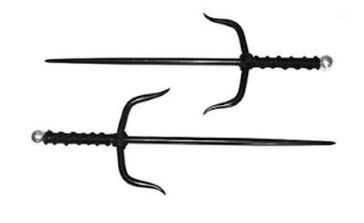
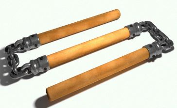
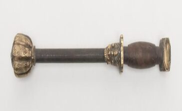
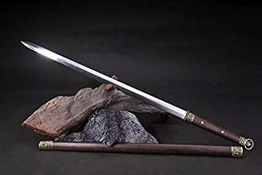
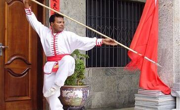

Chinesas

Sai(Adaga)
Arma típica do leste da china utilizada antigamente como ferramenta na medida de cercas e construções chinesas, acreditava-se anteriormente ter origem no japão. A finalidade do sai como arma reflete de suas formas distintas. Com perícia, pode ser empregada eficazmente contra urna espada longa, aprisionando a lâmina da espada no tsuba (guarda, extremidades laterais menores do que a central) do sai. Usuários habilidosos são capazes de quebrar lâmina presa com um movimento de suas mãos.

Gun (Bastão) ou kwan em cantonês
San Ti Kwân: bastão articulado em três partes; três pequenos bastões interligados com correntes. É uma das armas arquetípicas de Kung Fu. Sua criação é atribuída ao primeiro imperador Song. De acordo com a lenda, o imperador tinha um bastão favorito que foi quebrado em três partes durante a batalha. Mas mesmo ele continuou a lutar e bater nos oponentes com os pedações quebrados juntos. O San Ti Kwân hoje é feito de três cabos firmados juntos através de ligações de corrente. Os cabos normalmente têm rolamentos de borracha de espuma para facilitar a prática.

Dao ou Tou (cantonês): Facão chinês ou Espada Larga Chinesa.
Usada com a mesma leveza e controle da Espada Chinesa, a Espada Wushu, ao contrário da jian, tem como principal forma de ataque os cortes. Os lenços no cabo são para tirar a atenção do adversário da lamina durante o combate. Além disso, a lâmina mais resistente permite não apenas que os golpes do oponente sejam conduzidos, mas, também, bloqueados. O Facão é chamado o marechal de todas as armas. Ele é vigoroso, e rápido em defesa e ataque assim é comparado a um “tigre feroz”. As técnicas principais do Facão incluem mudança, corte, furar, erguer, perfurar, bloquear, empurrar e bater. Quando você tem prática de facão à cooperação entre o facão e as mãos são muito importantes e ambas as mãos têm que estar coordenadas para manter o equilíbrio. O Facão exige treinamento rigoroso e constante prática. O facão e o corpo também devem ser consistentes. O facão necessita sempre estar ao redor seu corpo, e suas mãos, pés, ombros, e braços viram junto com ele.

Jian (Espada)
A espada chinesa é uma das mais belas armas do kung fu. Usando movimentos circulares como forma de defesa, de manter o adversário na defensiva e a distância, ela possui um “enfeite” preso ao punho desviar a atenção do oponente dos movimentos da lâmina. Possui dois gumes e uma triangular, sendo seu principal ataque a estocada em direção aos orgãos internos, olhos e pescoço.
